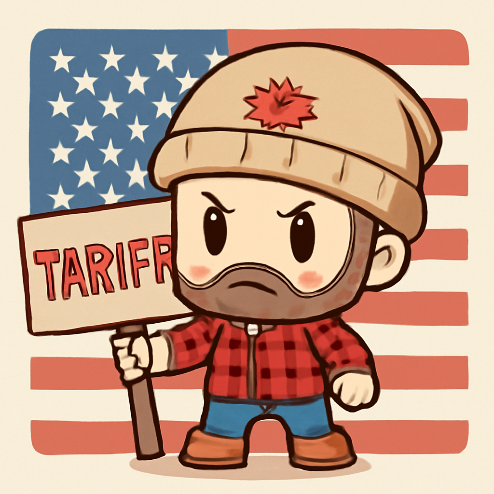
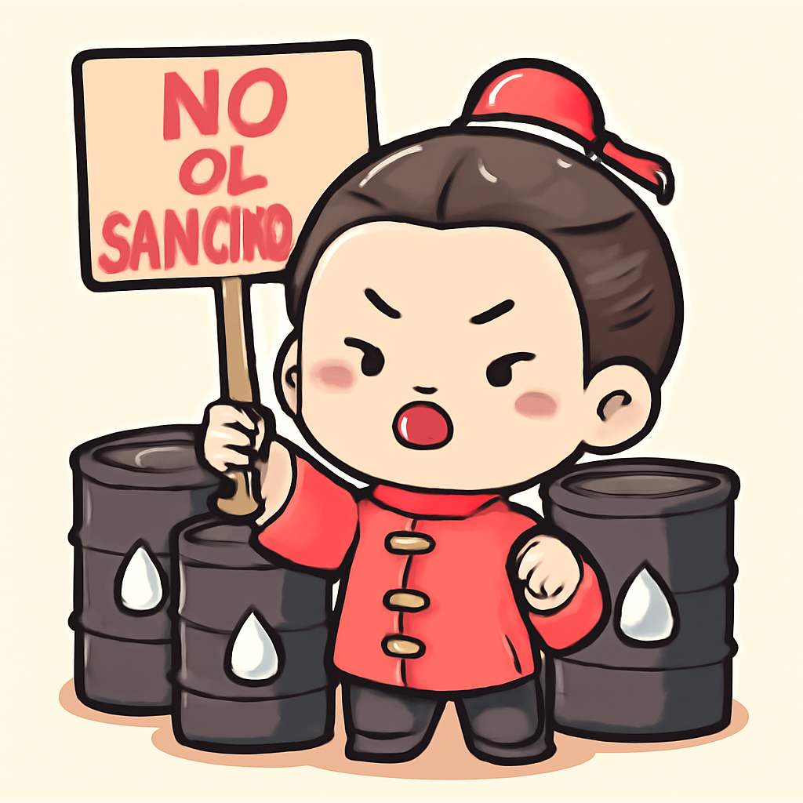
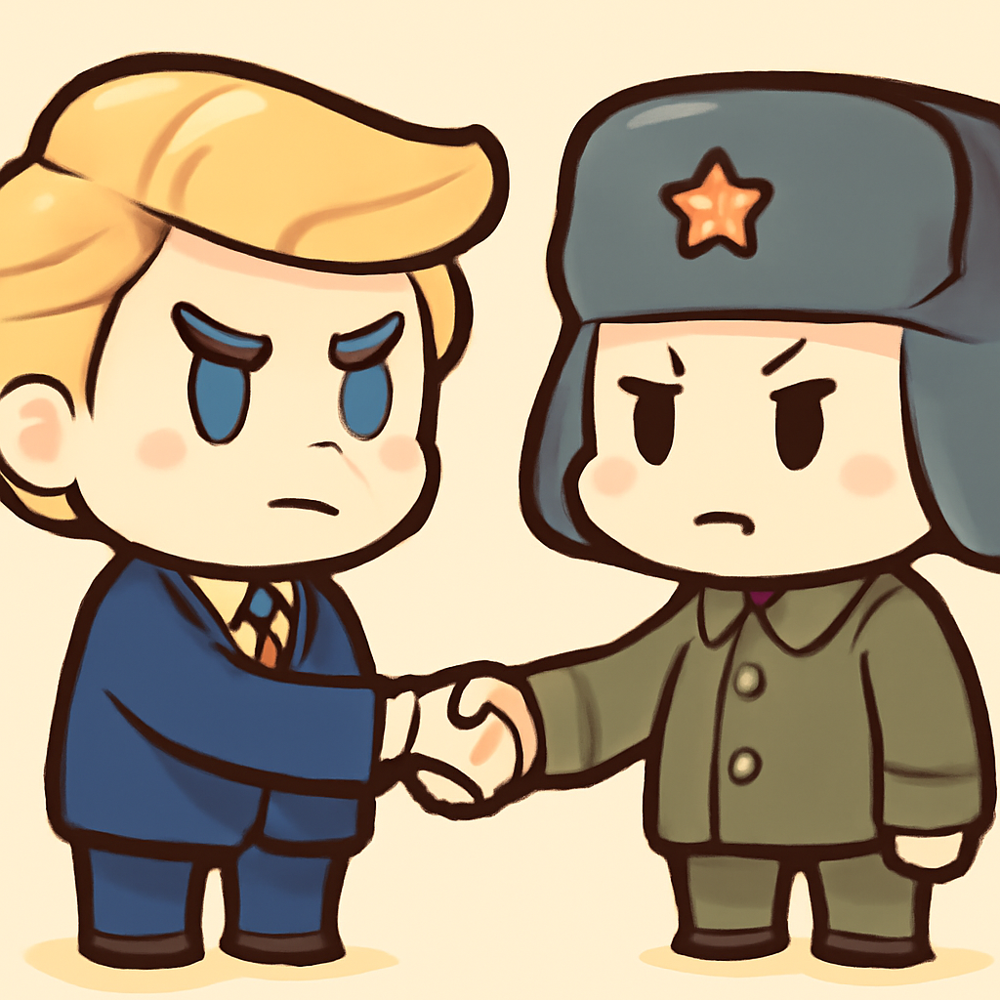
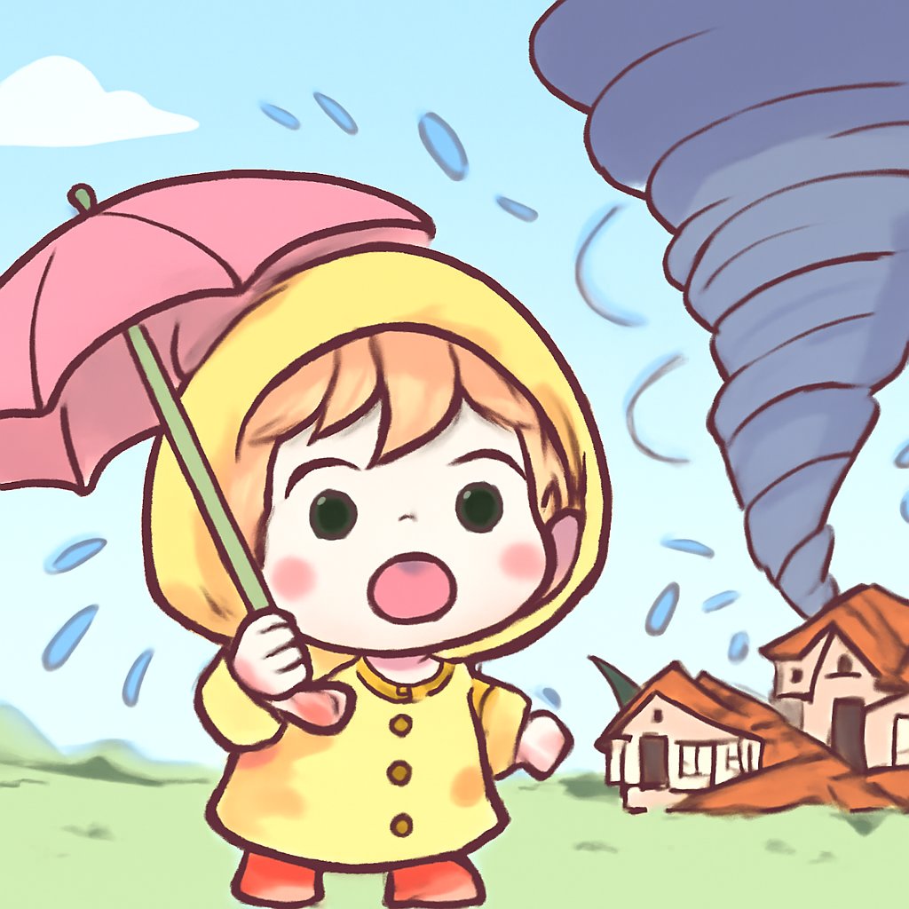
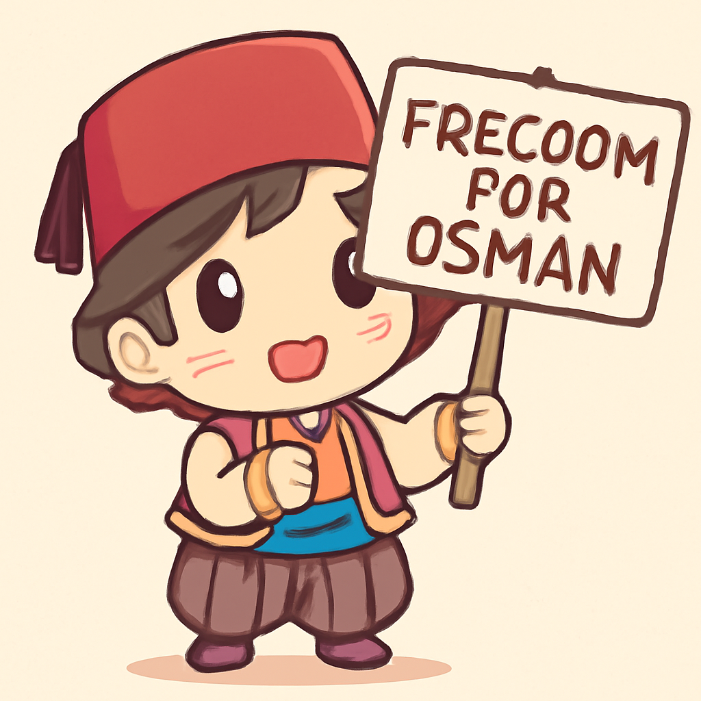

其一 · 加拿大 · 反制美國關稅新措施
加拿大宣布最高50%關稅，回擊美國貿易政策。

在加拿大，政府宣布對美國商品實施最高50%的報復性關稅，這是因為美國的貿易政策引發的緊張局勢。涉及的商品包括鋼材、家居用品及化妝品等，這將影響兩國的經濟關係，讓人擔心貿易戰的火花會燒到我們每個人身上。希望這場經濟鬥爭不會變成「誰能忍耐更久」的比賽！
🔗 原始新聞 ↗
2026-08-26 · 以古觀今，以笑抗愁
加拿大宣布最高50%關稅，回擊美國貿易政策。

在加拿大，政府宣布對美國商品實施最高50%的報復性關稅，這是因為美國的貿易政策引發的緊張局勢。涉及的商品包括鋼材、家居用品及化妝品等，這將影響兩國的經濟關係，讓人擔心貿易戰的火花會燒到我們每個人身上。希望這場經濟鬥爭不會變成「誰能忍耐更久」的比賽！
🔗 原始新聞 ↗
中國對美國制裁伊朗及其貿易夥伴表示強烈不滿。

在中國，政府強烈譴責美國對伊朗及其他貿易夥伴的新制裁，稱這一舉措是「非法」的，並可能影響多個國家的經濟。美國試圖孤立與伊朗有貿易往來的國家，中國則是主要的石油進口國。這讓人想起了國際舞台上的一場撲克牌遊戲，誰能穩住牌局，誰就能贏得這場鬥爭。
🔗 原始新聞 ↗
CIA局長秘密訪問莫斯科，進行未公開會談。

在俄羅斯，CIA局長的莫斯科之行引發了不少猜測，這次突訪讓人好奇究竟有什麼重要議題需要面對面討論。此行的消息在美國媒體引發了廣泛報導，這不僅顯示了兩國間的緊張局勢，也讓我們對後續的外交動態充滿期待。希望這次會談能為雙方帶來一些「好運」！
🔗 原始新聞 ↗
法國南部村莊遭龍捲風襲擊，造成多處受損。

在法國，南部的Pomas村遭遇了一場強烈的龍捲風，造成數十人受傷和數百棟房屋的損壞。當地居民的生活瞬間被改變，緊急救援行動隨即展開。這次自然災害再次提醒我們，天氣有時候比我們的計畫還要「瘋狂」，希望大家都能平安渡過這場風暴。
🔗 原始新聞 ↗
土耳其知名企業家被要求立即釋放，因其遭受政治迫害。

在土耳其，歐洲人權法院下令當局釋放企業家及人權活動家奧斯曼·卡瓦拉，因為他已經在監獄中度過近十年。此案引發了國際社會的廣泛關注，許多人質疑土耳其的司法獨立性。這不僅是對個人的勝利，更是對人權的一次呼籲，或許未來會有更多人站出來，為正義發聲！
🔗 原始新聞 ↗